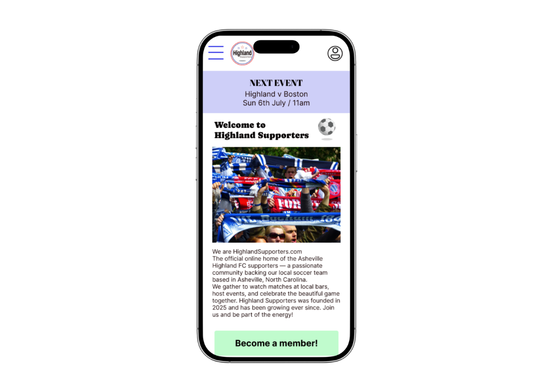
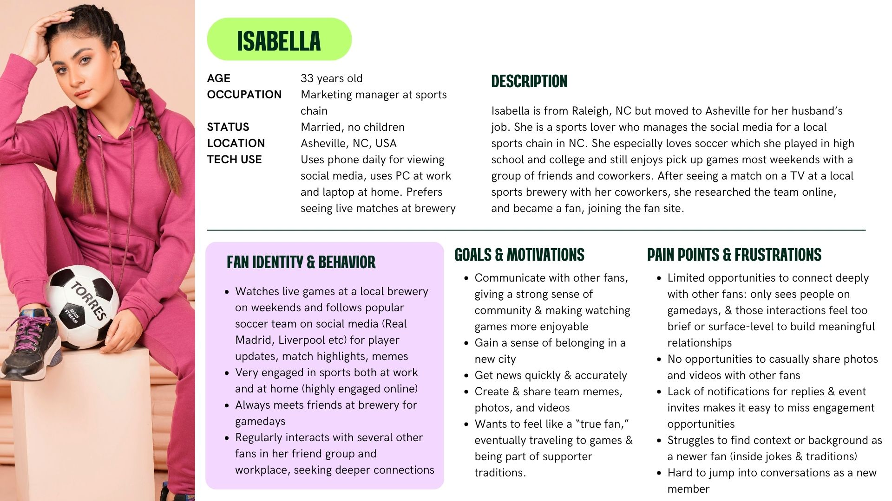
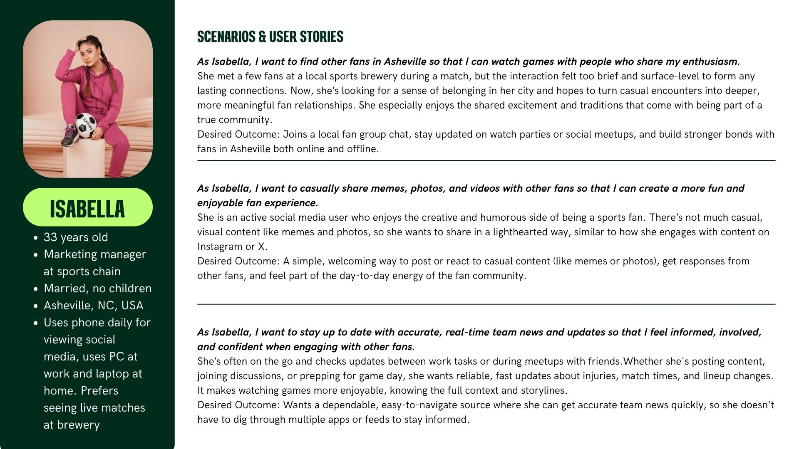
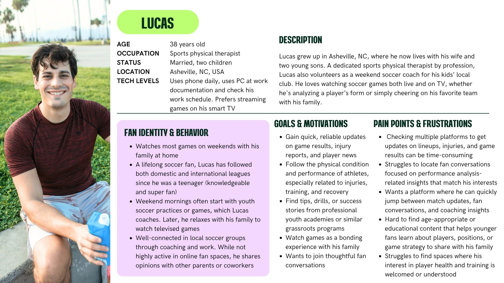
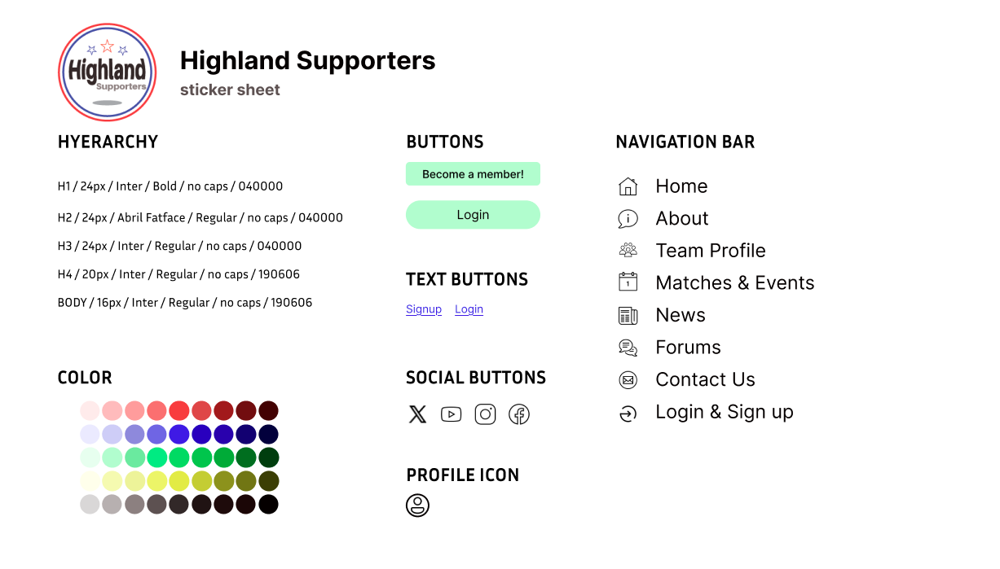

Highlanders Supporter fansite
This website was designed as a central hub for the Highland Supporters community, enabling fans to connect, stay updated, and engage with Asheville Highland FC. It also provides information about matchdays, events, and community activities, helping strengthen the connection between supporters and the club both online and offline.

Role
Designer
Tools
- Adobe Illustrator
- Figma
- Canva
Coopyright
The photos of ingredients and flavors are from Unsplash.
Personas & Problems




Logo, Typography & Color palette
The logo was designed with rounded typography to reflect the shape and energy of a soccer ball, creating a more dynamic and approachable visual identity. As the community is based in the United States, red and blue were used as the primary brand colors.
To enhance the overall energy and excitement of the website, a vibrant five-color palette was also introduced.

Low-Fidelity Prototype
A low-fidelity prototype focused on exploring the website structure, user flow, and key features of the Highland Supporters community site.
Mid & High Fidelity
After receiving feedback from peers and our professor, the design was iterated and finalized into a high-fidelity prototype.
What I changed
Summary & Next Steps
The Highland Supporters website was designed as a fan platform with essential features to strengthen community engagement and connection among supporters.
Next, I plan to develop a deeper understanding of sports fans to better identify their needs and behaviors. I also aim to further refine the concept by introducing more engaging and interactive features, such as a game-like points system to enhance user motivation and participation.